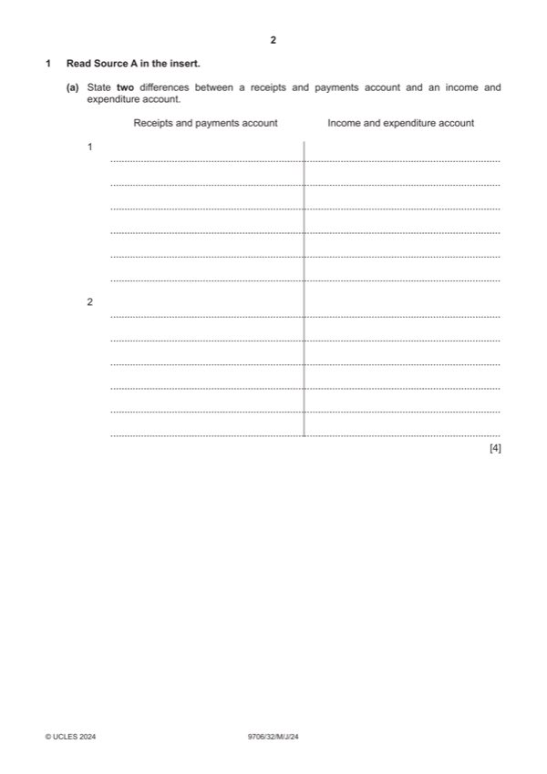

Question 1

Original paper page 2
Part 1(a) — solution
State two differences between a receipts and payments account and an income and expenditure account. 4
Receipts and payments account Income and expenditure account
Only cash / monetary items are recorded (1) Non-cash items such as depreciation are recorded (1)
The balance of the account is either cash at bank or The balance of the account is either surplus or deficit
overdraft at the year end / bank (1) for the year / income statement (1)
Receipts and payments are recorded regardless of the Revenue and expenses related to the current year
year they belong to i.e cash basis of accounting (1) only are recorded i.e. accrual basis of accounting (1)
Items of capital nature and revenue nature are Only items of revenue nature are recorded (1)
recorded (1)
Max 4
Accept other valid responses
University Press & Assessment 2024 Page 8 of 19
9706/32 Cambridge International AS & A Level – Mark Scheme May/June 2024
Mark points
- Include the ideas shown in the solution above.
Part 1(b) — solution
Answer: 264 00 · 176 00
Prepare the café’s statement of profit or loss for the year ended 31 December 2023, showing the value of stolen 10
cash in the expenses section.
$ $
264 00
Sales revenue 0
Opening inventory 11 200
Purchases W1 178 200 (1)
Closing inventory (balancing) (13 400) (1) OF
176 00
Cost of sales 0 (1)
Gross profit W2 88 000 (1)
Cash stolen W3 1 700 (2)
Café wages 34 800
Coffee machine written off W4 1 200 (2)
Depreciation – café equipment W5 7 500 (1)
Café expenses 15 500
Mark points
- Correct result: 264 00
- Correct result: 176 00
Part 1(c) — solution
Answer: 365 700 · 318 500
- ($4 000 + $2 400 + $336 000 + $5 600) (1) – ($4 800 + $1 600 + $3 200) (1) = $338 400 (1) OF
- $5 800 + $3 900 + $274 000 = $283 700
- ($335 000 + $25 000 – $144 000) 15% = $32 400
Mark points
- ($4 000 + $2 400 + $336 000 + $5 600) (1) – ($4 800 + $1 600 + $3 200) (1) = $338 400 (1) OF
- $5 800 + $3 900 + $274 000 = $283 700
- ($335 000 + $25 000 – $144 000) 15% = $32 400
Part 1(d) — solution
Advise the committee members which is the better option. Justify your answer. 5
Option 1 – max (2)
The club does not have enough cash to pay the whole amount as it only has a cash balance of $116 600 at 31 December
2023 (1).
Loan has to be raised and the club has to pay interest expense (1).
It’s a capital expenditure and paid once and for all (1).
The annual maintenance is minimal (1).
This increases the assets value of the club (1).
More reliable as no need for a human presence. (1)
Susceptible to breakdowns / hacking (1)
Option 2 – max (2)
Members may feel safer due to physical presence (1).
The club is still subject to the threat at nighttime (1).
Paying $30 000 each and every year is a heavy financial burden to the club (1).
Option 2’s annual expense of $30 000 is higher compared with Option 1’s $18 000 for the first year and $16 300 for the
second year (1).
Decision supported by a comment (1)
Accept other valid responses.
University Press & Assessment 2024 Page 11 of 19
9706/32 Cambridge International AS & A Level – Mark Scheme May/June 2024
Mark points
- Include the ideas shown in the solution above.